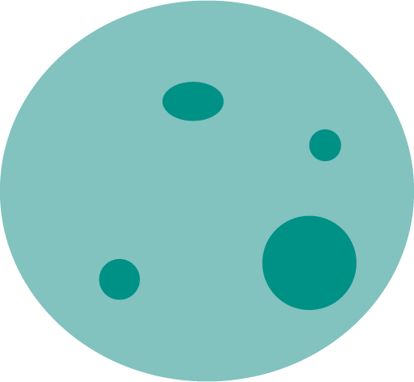
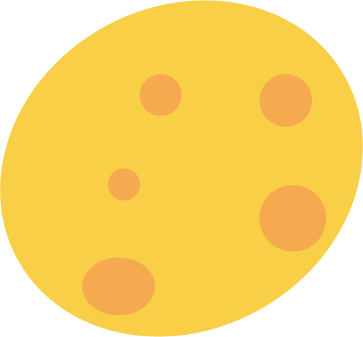
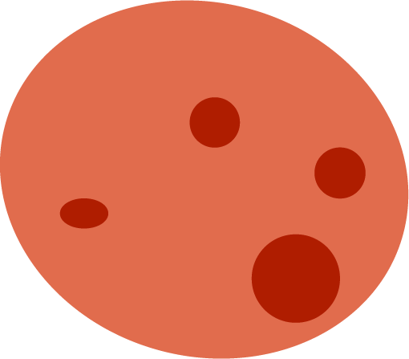
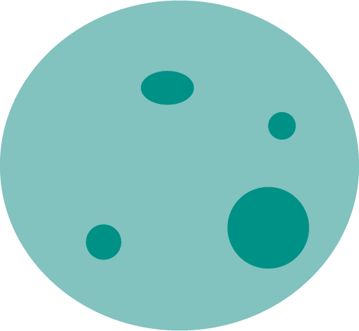
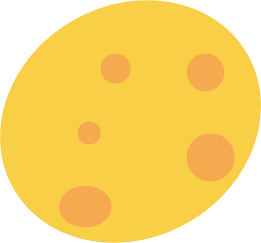
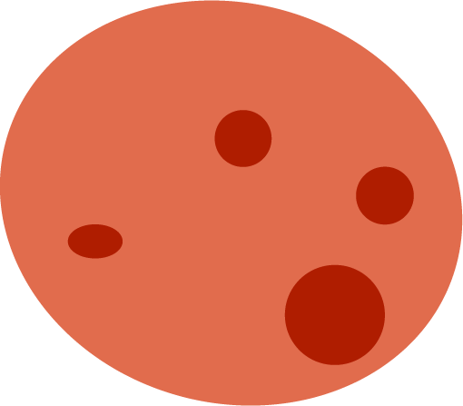

What is
coral bleaching?
Corals are beautiful and colourful animals. They're also home to many fish. Unfortunately, if corals get stressed out, they will kick out their plant friends. As a result, coral reefs can go from this...
 





...to colourless and dead.
This process is known as coral bleaching.
Want to stop
coral bleaching?
You don't have to be an expert to help.
Take action at the click of a button.
Sources
-
Information
This website relies mostly on peer reviewed journal articles as sources of information. Tertiary sources (usually trusted governmental agencies, credible scientific newspapers, or established charitable organizations) may be used when deemed necessary. Despite the designated numbers, sources are cited in no particular order.
- United States Environmental Protection Agency. (n.d.). What you can do to help protect coral reefs. https://www.epa.gov/coral-reefs/what-you-can-do-help-protect-coral-reefs
- Marine Stewardship Council. (n.d.). What does the blue MSC label mean? https://www.msc.org/what-we-are-doing/our-approach/what-does-the-blue-msc-label-mean
- Gupta. (2012). Tropical Depression: Your Saltwater Fish Tank May Be Killing the Ocean. https://www.scientificamerican.com/article/tropical-depression-your-saltwater-fish-tank-may-be-killing-the-ocean/
- The Nature Conservancy. (2021). 8 Easy Ways You Can Help Coral Reefs. https://www.nature.org/en-us/what-we-do/our-priorities/protect-water-and-land/land-and-water-stories/8-easy-ways-you-can-help-coral-reefs/
- Hoegh-Guldberg. (1999). Climate change, coral bleaching and the future of the world’s coral reefs. https://doi.org/10.1071/MF99078
- Schneider & Lim. (2019). Review of environmental effects of oxybenzone and other sunscreen active ingredients. https://doi.org/10.1016/j.jaad.2018.06.033
- Smith et al. (2010). The effects of top–down versus bottom–up control on benthic coral reef community structure. https://doi.org/10.1007/s00442-009-1546-z
- Sully et al. (2019). A global analysis of coral bleaching over the past two decades. https://doi.org/10.1038/s41467-019-09238-2
- Vega Thurber et al. (2014). Chronic nutrient enrichment increases prevalence and severity of coral disease and bleaching. https://doi.org/10.1111/gcb.12450
- Zhao et al. (2021). Impacts of nitrogen pollution on corals in the context of global climate change and potential strategies to conserve coral reefs. https://doi.org/10.1016/j.scitotenv.2021.145017
- WWF. (n.d.). Hawksbill turtle. https://www.worldwildlife.org/species/hawksbill-turtle
- Tebbet et al. (2021). Collapsing ecosystem functions on an inshore coral reef. https://doi.org/10.1016/j.jenvman.2021.112471
- Sato et al. (2020). Changes in the potential stocks of coral reef ecosystem services following coral bleaching in Sekisei Lagoon, southern Japan: implications for the future under global warming. https://doi.org/10.1007/s11625-019-00778-6
- Randall et al. (2019). Upwelling buffers climate change impacts on coral reefs of the eastern tropical Pacific. https://doi.org/10.1002/ecy.2918
- Russ et al. (2020). Coral cover a stronger driver of reef fish trophic biomass than fishing. https://doi.org/10.1002/eap.2224
-
Images
This website obtains photographs under the Creative Commons license. Authors are credited below with their corresponding links. All illustrations are my own work.
- "Yellow-tailed reef fish" by quinet is licensed under CC BY 2.0.